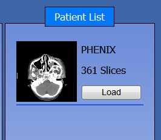
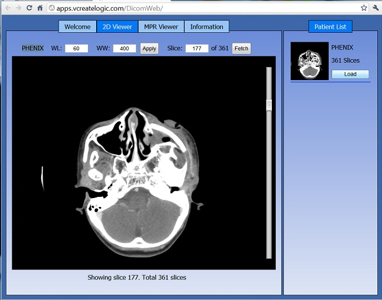
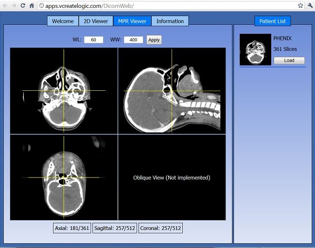

DICOM
Web Viewer is an example application that comes bundled with
GCFApplicationServer. This application lets you experience
high-performance scientific applications on the Web. Medical
visualization applications are traditionally desktop centric. Using
GCFApplicationServer, it is now possible to perform fairly intensive
medical visualization on the Web.
DICOM Web Viewer offers a
simple yet powerful UI in your browser to look at axial slices
stacked one behind other in a 2D Viewer. It also allows you to look
at axial, coronal and sagittal planes together in the 'MPR Viewer'
tab. The web application is hosted here purely for demo purposes
only. Please send your feedback for feedback@vcreatelogic.com.
Following sections give a brief description on how to use this web application most effectively.
Patient list shows a list of patients whose information is available on the server. Each entry has a “Load” button associated, which can be clicked to load the corresponding DICOM series. A screen shot of the “Patient List” is shown below.

Clicking on the “Load” button automatically shows the “2D Viewer” tab in the workspace. It shows a 2D image slice from the DICOM series at a time. The screen shot below shows the 2D Viewer with a sample slice.

You can browse through the slices using
Scroll bar (on the right) OR
Scrolling over the image using mouse wheel OR
Entering a slice index in the input box that shows the current slice value and then click “Fetch”.
Also you can adjust the window level and window width values in the input fields and click “Apply” to apply those values on the DICOM images.
Clicking on the MPR Viewer tab gives an MPR (multi-planar) view of the DICOM series, in three views namely axial, sagittal and coronal. A screenshot of a sample series is shown below.

Similar to 2DViewer you can apply window level and window width filters here also. Also it is possible to scroll through the slices in each of the views by simply scrolling using the mouse wheel over the respective view. The cross-hair on each of the view are automatically updated to reflect the movement. A status bar below keeps an updated information on the current slice index of each of the views.
You can move the mouse over the the center of the cross-hair, press the mouse over the center and drag it to any position within the image. Once you drop it – you will notice that the freshly sliced images in the other two views are fetched and shown.